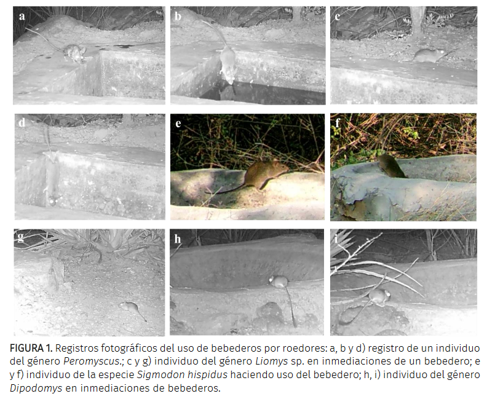

Hernández-Gómez, C. A., Andrade-Ponce, G. P., Velásquez-C., K. L., & Mandujano, S. (2020). Uso de bebederos artificiales por pequeños roedores en un bosque tropical seco en Oaxaca, México

Resumen
La implementación de bebederos artificiales para fauna silvestre es una práctica de manejo común en regiones con escasez estacional de agua. Los bebederos se instalan para beneficiar a especies de interés humano, sin embargo, éstas pueden ser usadas por otras especies. En esta nota reportamos observaciones de pequeños roedores visitando los bebederos en una localidad en la Reserva de Biosfera Tehuacán-Cuicatlán. Se monitorearon los bebederos empleando 12 cámaras-trampa durante la temporada seca de 2018 en la localidad de San Gabriel Casa Blanca, Oaxaca. Se calculó la tasa de visita de roedores y se comparó entre dos tipos de bebederos. Se registraron 154 visitas de roedores de al menos cuatro géneros: Peromyscus, Liomys, Sigmodon y Dipodomys. La tasa de visita promedio en ambos tipos de bebederos fue de 18.8 ± 37.7 visitas/100 días. No se encontraron diferencias significativas en las visitas por tipo de bebedero. Empleando cámaras-trampa evidenciamos las visitas y uso de bebederos por algunas especies de cricétidos. Se sugiere que la falta de rampas o paredes cóncavas en los bebederos representa un riesgo para especies pequeñas. Son necesarios otros estudios para evaluar el posible efecto de los bebederos sobre la biomasa, supervivencia y abundancia de roedores en bosques secos.
Abstract
The implementation of water developments for wildlife is a common management practice in regions with seasonal water shortages. In many cases, water developments are installed to benefit species of human interest, nevertheless, they can be used by other species. In this note we report observations of small rodents visiting water developments in a locality at the Tehuacán-Cuicatlán Biosphere Reserve. The water developments were monitored using 12 camera traps during the 2018 dry season in the locality of San Gabriel Casa Blanca, Oaxaca. We calculated the visit rate of rodents and compared it between two types of water developments. We registered 154 visits of rodents of at least four genera: Peromyscus, Liomys, Sigmodon and Dipodomys. We did not find significant differences between the visits among the water development types. We suggest to implement measures such as ramps or concave walls in the water developments, which reduce the risk of drowning for small species. Other studies are necessary to evaluate the possible effect of water developments on the biomass, survival and abundance of rodents in dry forests.